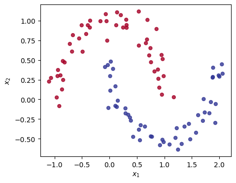

Code
---
title: "Gaussian Process Classification"
format:
html:
code-fold: true
jupyter: python3
fontsize: 1.2em
linestretch: 1.5
toc: true
notebook-view: true
---import pandas as pd
import numpy as np
import matplotlib
import matplotlib.pyplot as plt
from scipy.stats import multivariate_normal
from scipy.linalg import cholesky, solve_triangular, cho_factor, cho_solve
import seaborn as sns
from sklearn.datasets import make_moons
from sklearn.metrics import pairwise_distances
fig = plt.figure(figsize=(10,8))
plt.subplot(221)
c = plt.contourf(Xa, Xb, sigmoid(prior.rvs(1)).reshape(M,M), 50, vmin=0, vmax=1, cmap=matplotlib.cm.RdYlBu, norm=norm)
plt.scatter(X[:,0], X[:,1], c=t, cmap=matplotlib.cm.RdYlBu, s=25, edgecolor='w', alpha=0.8, norm=norm)
cbar = plt.colorbar(c)
plt.subplot(222)
c = plt.contourf(Xa, Xb, sigmoid(prior.rvs(1)).reshape(M,M), 50, vmin=0, vmax=1, cmap=matplotlib.cm.RdYlBu, norm=norm)
plt.scatter(X[:,0], X[:,1], c=t, cmap=matplotlib.cm.RdYlBu, s=25, edgecolor='w', alpha=0.8, norm=norm)
cbar = plt.colorbar(c)
plt.subplot(223)
c = plt.contourf(Xa, Xb, sigmoid(prior.rvs(1)).reshape(M,M), 50, vmin=0, vmax=1, cmap=matplotlib.cm.RdYlBu, norm=norm)
plt.scatter(X[:,0], X[:,1], c=t, cmap=matplotlib.cm.RdYlBu, s=25, edgecolor='w', alpha=0.8, norm=norm)
cbar = plt.colorbar(c)
plt.subplot(224)
c = plt.contourf(Xa, Xb, sigmoid(prior.rvs(1)).reshape(M,M), 50, vmin=0, vmax=1, cmap=matplotlib.cm.RdYlBu, norm=norm)
plt.scatter(X[:,0], X[:,1], c=t, cmap=matplotlib.cm.RdYlBu, s=25, edgecolor='w', alpha=0.8, norm=norm)
cbar = plt.colorbar(c)
fig.suptitle('Four samples from the GP prior', fontsize=13)
plt.savefig('fig2.png', dpi=150, bbox_inches='tight', transparent=True)
plt.show()<matplotlib.colorbar.Colorbar at 0x157b46350>for j in range(0, 10):
pp = sigmoid(f).flatten()
g_f = np.sum(t * np.log(pp) + (1 - t) * np.log(1. - pp + 1e-8)) - 0.5 * f.T @ K_inv @ f
print(float(g_f))
q = (t - pp).reshape(N,1)
grad = q - K_inv @ f
P = np.diag(pp * (1. - pp))
hess = -P - K_inv
f_prime = f - np.linalg.inv(hess + 1e-12 * np.eye(N)) @ grad
f = f_prime-172370.77223793537
-19.282854330238436
-16.478057199339062
-16.338477505385345
-16.33785884403903
-16.337858825403753
-16.33785882444115
-16.337858825450375
-16.337858825363156
-16.33785882566754/var/folders/34/0177579s72zfk8k1ytk34_9c0346k7/T/ipykernel_40819/2525650791.py:4: DeprecationWarning: Conversion of an array with ndim > 0 to a scalar is deprecated, and will error in future. Ensure you extract a single element from your array before performing this operation. (Deprecated NumPy 1.25.)
print(float(g_f))fig = plt.figure(figsize=(10,8))
plt.subplot(221)
c = plt.contourf(Xa, Xb, sigmoid(posterior.rvs(1)).reshape(M,M), 50, vmin=0, vmax=1, cmap=matplotlib.cm.RdYlBu, norm=norm)
plt.scatter(X[:,0], X[:,1], c=t, cmap=matplotlib.cm.RdYlBu, s=20, edgecolor='w', alpha=0.8, norm=norm)
cbar = plt.colorbar(c)
plt.subplot(222)
c = plt.contourf(Xa, Xb, sigmoid(posterior.rvs(1)).reshape(M,M), 50, vmin=0, vmax=1, cmap=matplotlib.cm.RdYlBu, norm=norm)
plt.scatter(X[:,0], X[:,1], c=t, cmap=matplotlib.cm.RdYlBu, s=25, edgecolor='w', alpha=0.8, norm=norm)
cbar = plt.colorbar(c)
plt.subplot(223)
c = plt.contourf(Xa, Xb, sigmoid(posterior.rvs(1)).reshape(M,M), 50, vmin=0, vmax=1, cmap=matplotlib.cm.RdYlBu, norm=norm)
plt.scatter(X[:,0], X[:,1], c=t, cmap=matplotlib.cm.RdYlBu, s=25, edgecolor='w', alpha=0.8, norm=norm)
cbar = plt.colorbar(c)
plt.subplot(224)
c = plt.contourf(Xa, Xb, sigmoid(posterior.rvs(1)).reshape(M,M), 50, vmin=0, vmax=1, cmap=matplotlib.cm.RdYlBu, norm=norm)
plt.scatter(X[:,0], X[:,1], c=t, cmap=matplotlib.cm.RdYlBu,s=25, edgecolor='w', alpha=0.8,norm=norm)
cbar = plt.colorbar(c)
fig.suptitle('Four samples from the GP posterior', fontsize=13)
plt.savefig('fig3.png', dpi=150, bbox_inches='tight', transparent=True)
plt.show()